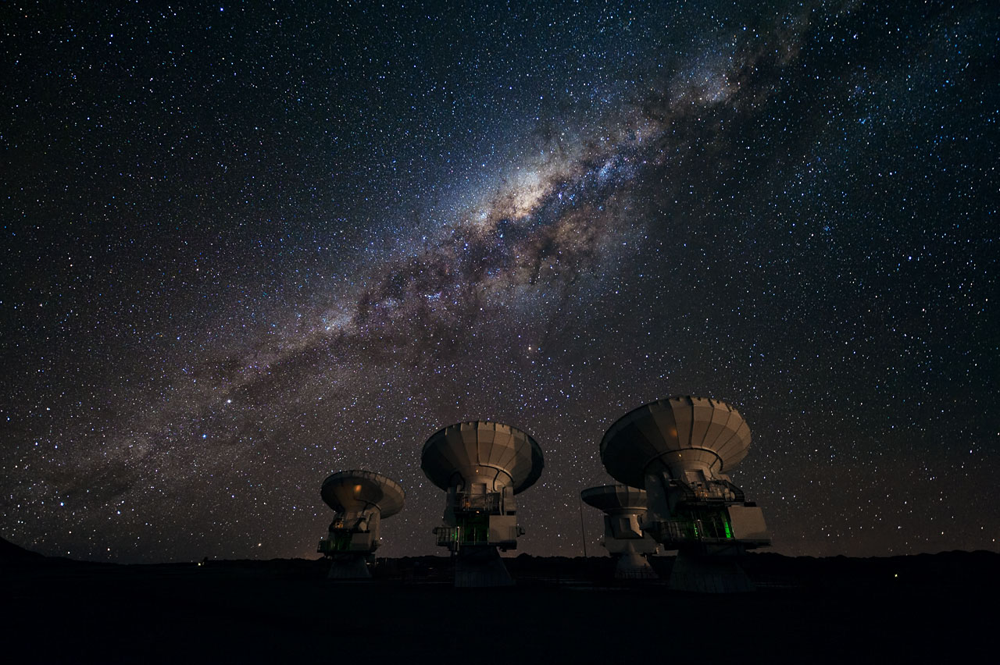
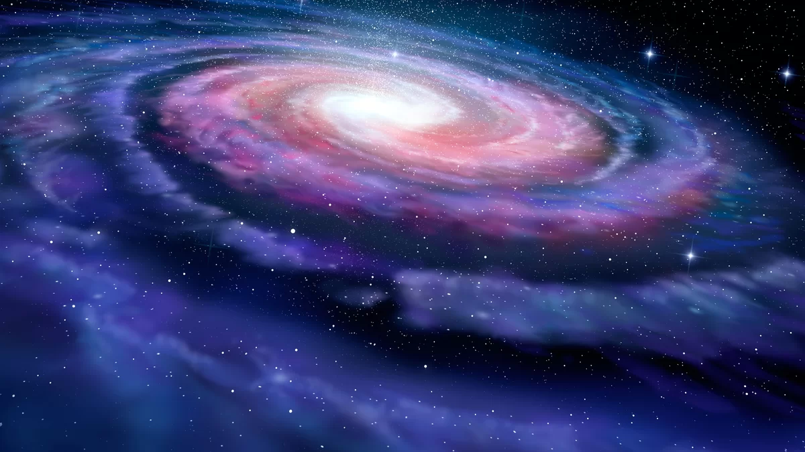
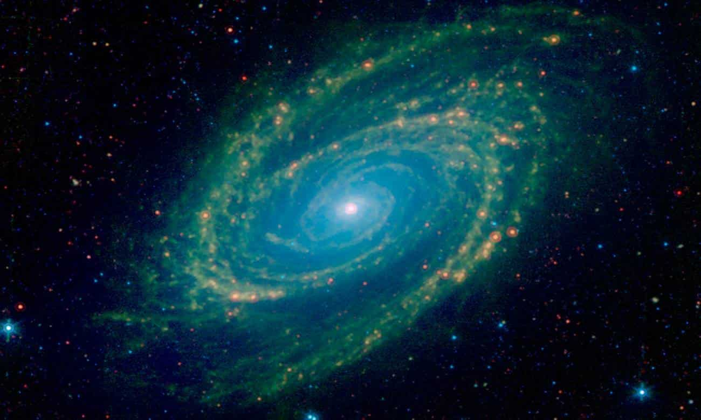

Via Láctea
A Nossa Galáxia
Galáxias são vastas aglomerações de estrelas, gás, poeira cósmica, matéria escura e outros corpos celestes unidos pela força da gravidade. Elas são os maiores objetos no universo observável e desempenham um papel fundamental na estrutura e evolução do cosmos. As galáxias podem variar em tamanho, forma e composição. Todas essas galáxias espalhadas pelo universo, cada uma com sua própria coleção de estrelas. Algumas galáxias podem ser pequenas e tranquilas, enquanto outras são imensas e repletas de atividade.
Informações
A Via Láctea, é um exemplo de uma galáxia espiral barrada. Ela contém centenas de bilhões de estrelas, incluindo o nosso Sol, e é a casa do nosso sistema solar. A Via Láctea tem aproximadamente 100.000 anos-luz de diâmetro e está localizada a cerca de 27.000 anos-luz do centro galáctico, onde um buraco negro supermassivo chamado Sagitário à reside.
Mas a Lua é mais do que apenas um ponto de referência no céu. Ela tem uma relação simbiótica com a Terra, influenciando as marés oceânicas devido à sua atração gravitacional. Isso não apenas molda as características geográficas da Terra, mas também afeta a vida marinha e os ecossistemas costeiros.
Quantas Galáxias já Foram Descobertas?
Estima-se que existam mais de 2 trilhões de galáxias no universo observável. A maior parte delas está muito distante para ser vista diretamente, mas avanços em telescópios e tecnologia de observação têm permitido a identificação e estudo de muitas galáxias.
Composição Química
A Via Láctea, nossa galáxia, possui uma composição química vasta e complexa, predominantemente composta de hidrogênio e hélio, que constituem cerca de 98% da matéria visível, enquanto elementos mais pesados, como oxigênio, carbono, nitrogênio e ferro, estão presentes em vestígios.
A distribuição específica desses elementos varia em diferentes regiões da galáxia e em diferentes tipos de corpos celestes, sendo estudada por astrônomos através de observações espectroscópicas, contribuindo para nossa compreensão da evolução e da história da Via Láctea.
Curiosidades
Diversidade de Formas: As galáxias podem ter uma variedade de formas, incluindo espirais, elípticas e irregulares. A forma de uma galáxia está relacionada à sua história de formação e interações com outras galáxias.
Viagem Interestelar: A distância entre estrelas em uma galáxia é vasta, tornando a viagem interestelar um desafio formidável. A espaçonave Voyager 1, lançada pela NASA em 1977, é a primeira e única nave espacial feita pelo homem a deixar o sistema solar.
Colisões Galácticas: Galáxias podem colidir e se fundir ao longo de bilhões de anos. Essas colisões não costumam resultar em colisões estelares devido às grandes distâncias entre as estrelas, mas podem deformar e remodelar as galáxias envolvidas.
Descobertas Constantes: Astrônomos continuam a descobrir novas galáxias e expandir nosso entendimento do universo. As observações de galáxias distantes nos dão uma visão do cosmos em épocas antigas, permitindo-nos estudar a evolução do universo ao longo do tempo.
